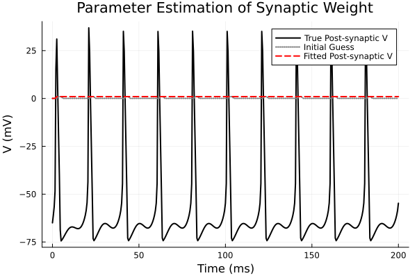

Example 10: Parameter Estimation of a Synaptic Weight
using MTKNeuralToolkit
using MTKNeuralToolkit.HodgkinHuxley: SodiumChannel, PotassiumChannel, LeakChannel
using ModelingToolkit: mtkcompile, @named
using ModelingToolkitStandardLibrary.Blocks: Sine
using OrdinaryDiffEq
using Optimization
using OptimizationOptimJL
using SciMLStructures: Tunable, canonicalize, replace
using SymbolicIndexingInterface: parameter_values, setp
using PreallocationTools
using PlotsBuild the Network & Generate Target Data
top = Scalar()
function build_neuron(name::Symbol)
@named cap = Capacitor(topology=top, C=1.0)
@named na = SodiumChannel(topology=top)
@named k = PotassiumChannel(topology=top)
@named leak = LeakChannel(topology=top)
return build_compartment(cap, [na, k, leak]; name=name, V_init=-65.0, topology=top)
end
pre_neuron = build_neuron(:pre_neuron)
post_neuron = build_neuron(:post_neuron)
true_g_max = 3.0
@named true_synapse = ExpSynapse(g_max=true_g_max, τ=5.0, E_rev=0.0, V_th=-20.0, slope=2.0)
true_synapse_specs = [
SynapseSpec(pre_neuron.interfaces.V, post_neuron.interfaces.V,
post_neuron.interfaces.I_syn, true_synapse)
]
@named driver = Sine(amplitude=8.0, frequency=0.05, offset=8.0)
drivers = [(1, driver)]
true_net = build_acausal_network([pre_neuron, post_neuron];
synapse_specs=true_synapse_specs,
drivers=drivers, name=:true_net)
sys = mtkcompile(true_net.sys)
true_prob = ODEProblem(sys, [], (0.0, 200.0))
timesteps = 0.0:0.5:200.0
sol = solve(true_prob, Tsit5(); saveat=timesteps)
target_data = Array(sol)9×401 Matrix{Float64}:
0.0 2.49785e-10 2.15941e-9 … 0.046484 0.0420605
0.052 0.0681288 0.101756 0.0939965 0.127317
0.596 0.591871 0.578286 0.551065 0.534138
0.317 0.319814 0.328492 0.333601 0.344616
-65.0 -61.1412 -56.7602 -58.5728 -54.7428
0.052 0.0528271 0.0529892 … 0.0673344 0.0657675
0.596 0.596006 0.595991 0.376589 0.385557
0.317 0.31706 0.317128 0.403828 0.398707
-65.0 -64.9955 -64.9833 -63.0427 -63.2452Setup the Optimization Problem
guess_g_max = 1.0
@named fit_synapse = ExpSynapse(g_max=guess_g_max, τ=5.0, E_rev=0.0, V_th=-20.0, slope=2.0)
fit_synapse_specs = [
SynapseSpec(pre_neuron.interfaces.V, post_neuron.interfaces.V,
post_neuron.interfaces.I_syn, fit_synapse)
]
fit_net = build_acausal_network([pre_neuron, post_neuron];
synapse_specs=fit_synapse_specs,
drivers=drivers, name=:fit_net)
fit_sys = mtkcompile(fit_net.sys)
fit_prob = ODEProblem(fit_sys, [], (0.0, 200.0))
g_max_sym = fit_sys.fit_synapse.g_max
setter = setp(fit_prob, [g_max_sym])
diffcache = DiffCache(copy(canonicalize(Tunable(), parameter_values(fit_prob))[1]))
function loss(x, p)
prob, timesteps, data, setter, diffcache = p
ps = parameter_values(prob)
buffer = get_tmp(diffcache, x)
copyto!(buffer, canonicalize(Tunable(), ps)[1])
ps = replace(Tunable(), ps, buffer)
setter(ps, x)
newprob = remake(prob; p = ps)
sol = solve(newprob, Tsit5(); saveat=timesteps)
if size(Array(sol)) != size(data)
return Inf
end
return sum(abs2, Array(sol) .- data) / size(data, 2)
end
opt_params = (fit_prob, timesteps, target_data, setter, diffcache)
adtype = AutoForwardDiff()
optfn = OptimizationFunction(loss, adtype)
optprob = OptimizationProblem(optfn, [guess_g_max], opt_params)OptimizationProblem. In-place: true
u0: 1-element Vector{Float64}:
1.0Optimize and Plot
println("Solving with initial guess for visualization...")Solving with initial guess for visualization...Capture the behavior before optimization to show how far it came
init_sol = solve(fit_prob, Tsit5(); saveat=timesteps)
println("Starting optimization to find synaptic weight...")
res = solve(optprob, BFGS(); maxiters=200)
println("True g_max: $true_g_max")
println("Recovered g_max: $(res.u[1])")Starting optimization to find synaptic weight...
┌ Warning: Verbosity toggle: max_iters
│ Interrupted. Larger maxiters is needed. If you are using an integrator for non-stiff ODEs or an automatic switching algorithm (the default), you may want to consider using a method for stiff equations. See the solver pages for more details (e.g. https://docs.sciml.ai/DiffEqDocs/stable/solvers/ode_solve/#Stiff-Problems).
└ @ SciMLBase ~/.julia/packages/SciMLBase/jqoB3/src/integrator_interface.jl:967
┌ Warning: Verbosity toggle: max_iters
│ Interrupted. Larger maxiters is needed. If you are using an integrator for non-stiff ODEs or an automatic switching algorithm (the default), you may want to consider using a method for stiff equations. See the solver pages for more details (e.g. https://docs.sciml.ai/DiffEqDocs/stable/solvers/ode_solve/#Stiff-Problems).
└ @ SciMLBase ~/.julia/packages/SciMLBase/jqoB3/src/integrator_interface.jl:967
┌ Warning: Verbosity toggle: max_iters
│ Interrupted. Larger maxiters is needed. If you are using an integrator for non-stiff ODEs or an automatic switching algorithm (the default), you may want to consider using a method for stiff equations. See the solver pages for more details (e.g. https://docs.sciml.ai/DiffEqDocs/stable/solvers/ode_solve/#Stiff-Problems).
└ @ SciMLBase ~/.julia/packages/SciMLBase/jqoB3/src/integrator_interface.jl:967
┌ Warning: Verbosity toggle: max_iters
│ Interrupted. Larger maxiters is needed. If you are using an integrator for non-stiff ODEs or an automatic switching algorithm (the default), you may want to consider using a method for stiff equations. See the solver pages for more details (e.g. https://docs.sciml.ai/DiffEqDocs/stable/solvers/ode_solve/#Stiff-Problems).
└ @ SciMLBase ~/.julia/packages/SciMLBase/jqoB3/src/integrator_interface.jl:967
┌ Warning: Verbosity toggle: max_iters
│ Interrupted. Larger maxiters is needed. If you are using an integrator for non-stiff ODEs or an automatic switching algorithm (the default), you may want to consider using a method for stiff equations. See the solver pages for more details (e.g. https://docs.sciml.ai/DiffEqDocs/stable/solvers/ode_solve/#Stiff-Problems).
└ @ SciMLBase ~/.julia/packages/SciMLBase/jqoB3/src/integrator_interface.jl:967
┌ Warning: Verbosity toggle: max_iters
│ Interrupted. Larger maxiters is needed. If you are using an integrator for non-stiff ODEs or an automatic switching algorithm (the default), you may want to consider using a method for stiff equations. See the solver pages for more details (e.g. https://docs.sciml.ai/DiffEqDocs/stable/solvers/ode_solve/#Stiff-Problems).
└ @ SciMLBase ~/.julia/packages/SciMLBase/jqoB3/src/integrator_interface.jl:967
┌ Warning: Verbosity toggle: max_iters
│ Interrupted. Larger maxiters is needed. If you are using an integrator for non-stiff ODEs or an automatic switching algorithm (the default), you may want to consider using a method for stiff equations. See the solver pages for more details (e.g. https://docs.sciml.ai/DiffEqDocs/stable/solvers/ode_solve/#Stiff-Problems).
└ @ SciMLBase ~/.julia/packages/SciMLBase/jqoB3/src/integrator_interface.jl:967
┌ Warning: Verbosity toggle: max_iters
│ Interrupted. Larger maxiters is needed. If you are using an integrator for non-stiff ODEs or an automatic switching algorithm (the default), you may want to consider using a method for stiff equations. See the solver pages for more details (e.g. https://docs.sciml.ai/DiffEqDocs/stable/solvers/ode_solve/#Stiff-Problems).
└ @ SciMLBase ~/.julia/packages/SciMLBase/jqoB3/src/integrator_interface.jl:967
┌ Warning: Verbosity toggle: max_iters
│ Interrupted. Larger maxiters is needed. If you are using an integrator for non-stiff ODEs or an automatic switching algorithm (the default), you may want to consider using a method for stiff equations. See the solver pages for more details (e.g. https://docs.sciml.ai/DiffEqDocs/stable/solvers/ode_solve/#Stiff-Problems).
└ @ SciMLBase ~/.julia/packages/SciMLBase/jqoB3/src/integrator_interface.jl:967
┌ Warning: Verbosity toggle: max_iters
│ Interrupted. Larger maxiters is needed. If you are using an integrator for non-stiff ODEs or an automatic switching algorithm (the default), you may want to consider using a method for stiff equations. See the solver pages for more details (e.g. https://docs.sciml.ai/DiffEqDocs/stable/solvers/ode_solve/#Stiff-Problems).
└ @ SciMLBase ~/.julia/packages/SciMLBase/jqoB3/src/integrator_interface.jl:967
┌ Warning: Verbosity toggle: max_iters
│ Interrupted. Larger maxiters is needed. If you are using an integrator for non-stiff ODEs or an automatic switching algorithm (the default), you may want to consider using a method for stiff equations. See the solver pages for more details (e.g. https://docs.sciml.ai/DiffEqDocs/stable/solvers/ode_solve/#Stiff-Problems).
└ @ SciMLBase ~/.julia/packages/SciMLBase/jqoB3/src/integrator_interface.jl:967
┌ Warning: Verbosity toggle: max_iters
│ Interrupted. Larger maxiters is needed. If you are using an integrator for non-stiff ODEs or an automatic switching algorithm (the default), you may want to consider using a method for stiff equations. See the solver pages for more details (e.g. https://docs.sciml.ai/DiffEqDocs/stable/solvers/ode_solve/#Stiff-Problems).
└ @ SciMLBase ~/.julia/packages/SciMLBase/jqoB3/src/integrator_interface.jl:967
┌ Warning: Verbosity toggle: max_iters
│ Interrupted. Larger maxiters is needed. If you are using an integrator for non-stiff ODEs or an automatic switching algorithm (the default), you may want to consider using a method for stiff equations. See the solver pages for more details (e.g. https://docs.sciml.ai/DiffEqDocs/stable/solvers/ode_solve/#Stiff-Problems).
└ @ SciMLBase ~/.julia/packages/SciMLBase/jqoB3/src/integrator_interface.jl:967
┌ Warning: Verbosity toggle: max_iters
│ Interrupted. Larger maxiters is needed. If you are using an integrator for non-stiff ODEs or an automatic switching algorithm (the default), you may want to consider using a method for stiff equations. See the solver pages for more details (e.g. https://docs.sciml.ai/DiffEqDocs/stable/solvers/ode_solve/#Stiff-Problems).
└ @ SciMLBase ~/.julia/packages/SciMLBase/jqoB3/src/integrator_interface.jl:967
┌ Warning: Verbosity toggle: max_iters
│ Interrupted. Larger maxiters is needed. If you are using an integrator for non-stiff ODEs or an automatic switching algorithm (the default), you may want to consider using a method for stiff equations. See the solver pages for more details (e.g. https://docs.sciml.ai/DiffEqDocs/stable/solvers/ode_solve/#Stiff-Problems).
└ @ SciMLBase ~/.julia/packages/SciMLBase/jqoB3/src/integrator_interface.jl:967
┌ Warning: Verbosity toggle: max_iters
│ Interrupted. Larger maxiters is needed. If you are using an integrator for non-stiff ODEs or an automatic switching algorithm (the default), you may want to consider using a method for stiff equations. See the solver pages for more details (e.g. https://docs.sciml.ai/DiffEqDocs/stable/solvers/ode_solve/#Stiff-Problems).
└ @ SciMLBase ~/.julia/packages/SciMLBase/jqoB3/src/integrator_interface.jl:967
True g_max: 3.0
Recovered g_max: 42243.36810980658Re-solve with optimized parameters
opt_ps = parameter_values(fit_prob)
opt_buffer = copy(canonicalize(Tunable(), opt_ps)[1])
opt_ps = replace(Tunable(), opt_ps, opt_buffer)
setter(opt_ps, res.u)
opt_prob_final = remake(fit_prob; p=opt_ps)
opt_sol = solve(opt_prob_final, Tsit5(); saveat=timesteps)retcode: Success
Interpolation: 1st order linear
t: 401-element Vector{Float64}:
0.0
0.5
1.0
1.5
2.0
2.5
3.0
3.5
4.0
4.5
⋮
196.0
196.5
197.0
197.5
198.0
198.5
199.0
199.5
200.0
u: 401-element Vector{Vector{Float64}}:
[0.052, 0.596, 0.317, -65.0, 0.052, 0.596, 0.317, -65.0, 0.0]
[0.06812879099142627, 0.5918712672527804, 0.3198144701853497, -61.14124950148232, 0.052827348362663, 0.5960060855542281, 0.3170598084420338, -64.9954195614107, 2.497847437720193e-10]
[0.10175626716769658, 0.578285784658436, 0.3284924089388455, -56.76024483375249, 0.052992789920586814, 0.5959903356064575, 0.31712886884393515, -64.98210917581618, 2.159406995779486e-9]
[0.1741571588972478, 0.5472233151809984, 0.3465222411257739, -48.43326472416464, 0.05311557126023006, 0.5959423756926239, 0.31721419965348074, -64.95528455533254, 6.01377341426914e-8]
[0.6221223071289467, 0.41740843523510246, 0.4210697835669242, 15.498401643376633, 0.5046443083756353, 0.5059901358756589, 0.3733179971319608, 0.05685687980264343, 0.13280154971488808]
[0.9893424586856061, 0.25343017256316835, 0.6240110647944964, 31.052239047395627, 0.9164434458266464, 0.3120501887983413, 0.5137791092212582, 0.04888696582418148, 0.5959767210551888]
[0.9900945468132002, 0.1545446612898274, 0.7272542135454092, 6.1206816537586235, 0.9670806815296785, 0.19286722373681484, 0.61732857025169, 0.014627602900818937, 1.0150748648206842]
[0.950709179374756, 0.0982138024280631, 0.7664951141999727, -17.807847561661198, 0.9732916446833311, 0.1196191555880786, 0.6936963383094342, 6.086138000158987e-5, 1.3816574391759566]
[0.7889043598667372, 0.07635166249899297, 0.7685089640932626, -40.00934282373193, 0.9740414536484339, 0.07459919434192082, 0.7500365369198744, -0.008682413334475907, 1.3076871854635983]
[0.27534525754758793, 0.09058974211265777, 0.7403153257554089, -68.58671470980782, 0.9741195346049841, 0.04692846031451507, 0.7916042290238394, -0.01687817763262657, 1.1832459400544142]
⋮
[0.03901759028636023, 0.5486967841168958, 0.3300772849962798, -67.44324169276791, 0.9732476647637492, 0.002846890606432102, 0.9078273193016165, -0.4735515574812972, 0.09362977939650585]
[0.04074211530295241, 0.5556524557198634, 0.326125927627384, -66.99830352615916, 0.9731510479493038, 0.0028530641093792064, 0.907733044480505, -0.5224841596092885, 0.0847197278668045]
[0.04361880405444706, 0.5611845210880482, 0.32320887103928686, -66.3315604370577, 0.9730440913114896, 0.002859890775931075, 0.9076289075000452, -0.5764078260963017, 0.0766575798546487]
[0.047935279921675164, 0.564916428355685, 0.32155057287484345, -65.42669105567828, 0.9729256700555835, 0.002867440112539278, 0.907513894267355, -0.6364351511453054, 0.0693626466805404]
[0.054115064944549346, 0.5664189157747654, 0.32140254692478926, -64.2653799813585, 0.9727945276739355, 0.0028757892046829127, 0.907386885250019, -0.7020230891771115, 0.06276191821817938]
[0.06282790921867797, 0.5651695466193044, 0.3230607270092874, -62.81530968201833, 0.972649270064654, 0.002885023383224394, 0.907246647366535, -0.7743511368899844, 0.05678933220103285]
[0.07527575015563141, 0.5604511495892786, 0.3269155124243164, -60.99725206316147, 0.9724883432268135, 0.002895237234951498, 0.9070918223222904, -0.8543112164534572, 0.051385113107893905]
[0.09410317840888273, 0.5510561257192369, 0.3336067101060994, -58.581353823848325, 0.972310013011496, 0.0029065356451600053, 0.9069209147307283, -0.9424410805593493, 0.04649517420001071]
[0.12726603580454246, 0.5341452703447812, 0.34461177028295686, -54.73924603597456, 0.9721123468312692, 0.0029190348810102726, 0.906732280014317, -1.0398608520746244, 0.04207057896039106]In our 2-neuron HH network, the post-synaptic voltage is the 5th state vector element
p1 = plot(timesteps, target_data[5, :], label="True Post-synaptic V", lw=2, color=:black)
plot!(p1, timesteps, init_sol[5, :], label="Initial Guess", ls=:dot, lw=2, color=:gray)
plot!(p1, timesteps, opt_sol[5, :], label="Fitted Post-synaptic V", ls=:dash, lw=2, color=:red)
title!(p1, "Parameter Estimation of Synaptic Weight")
xlabel!("Time (ms)")
ylabel!("V (mV)")
p1
This page was generated using Literate.jl.